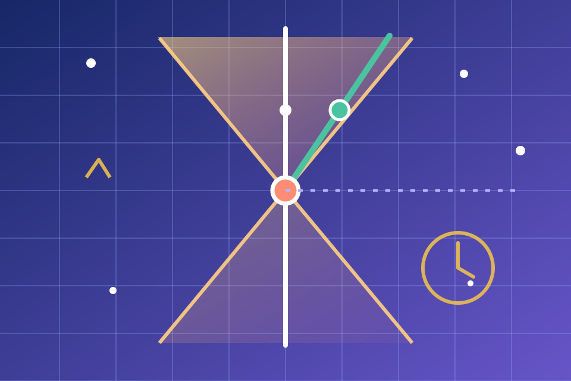

Relativity & the Structure of Time

1. Why did physics abandon absolute time?
In Newtonian mechanics, a common time coordinate can be used across all inertial frames: observers disagree about positions and velocities, but not about the elapsed time between the same pair of events. Einstein's special relativity revises that picture.
Its starting points are:
- The principle of relativity: the laws of physics have the same form in all inertial reference frames.
- The invariance of the speed of light in vacuum: every inertial observer measures the same vacuum light speed (c), regardless of the relative motion of source and observer.
These principles are supported by experiment and lead to Lorentz transformations in place of the Galilean transformations of classical mechanics. Special relativity addresses the physics of inertial frames in flat spacetime; gravitation and curved spacetime belong to the later, more general theory.[^openstax-sim][^mit-course]
A surprising consequence is that observers cannot preserve both a common absolute time and an invariant speed of light while maintaining the usual structure of inertial reference frames. The measurements of space and time must transform together.
2. Can observers disagree about which events are simultaneous?
Yes, if the events occur at different places and are sufficiently separated in spacetime. The crucial issue is not simply which flash of light an observer sees first. Light takes time to travel, and careful observers correct for that delay using clocks synchronised within their own frame.
Let two events have a separation ((\Delta t,\Delta x)) in inertial frame (S). For frame (S') moving at speed (v) along the (x)-axis, the Lorentz transformation gives
[ \Delta t'=\gamma\left(\Delta t-\frac{v\Delta x}{c^2}\right), \qquad \gamma=\frac{1}{\sqrt{1-v^2/c^2}}. ]
If the events are simultaneous in (S), then (\Delta t=0). But when (\Delta x\neq0) and (v\neq0),
[ \Delta t'=-\gamma\frac{v\Delta x}{c^2}\neq0. ]
The events are therefore not simultaneous in (S'). Both frames use internally consistent clock conventions and the same physical laws.[^openstax-sim]
There is an essential boundary to this result. For events that can causally influence one another—that is, events separated by a timelike or lightlike interval—their causal order cannot be reversed by changing inertial frames. Reversals of temporal ordering are possible for spacelike-separated events, which cannot exchange signals at or below the speed of light. Relativity does not make cause and effect arbitrary.
Einstein Online's account of how “now” is defined explains why operational clock synchronisation matters.[^einstein]
3. Why does a moving clock accumulate less time?
A light clock offers a geometrical derivation. Imagine light bouncing vertically between two mirrors separated by a fixed distance (L) in the clock's own rest frame. A complete round trip takes
[ \Delta\tau=\frac{2L}{c}. ]
Here (\Delta\tau) is the proper time: the interval recorded by the clock that is present at both the departure and return events.
Now examine the same clock from a frame in which it moves horizontally at speed (v). During each half-trip, the light follows a longer diagonal path. The invariance of the light speed gives, from the right triangle,
[ \left(\frac{c\Delta t}{2}\right)^2 = L^2+\left(\frac{v\Delta t}{2}\right)^2. ]
Using (L=c\Delta\tau/2) and rearranging yields
[ \boxed{\Delta t=\gamma\Delta\tau =\frac{\Delta\tau}{\sqrt{1-v^2/c^2}}.} ]
For any nonzero relative speed less than (c), (\gamma>1). Thus the interval between the two clock events is longer in the frame where that clock is moving than the proper time measured by the clock itself.[^openstax-dilation]
Consider a numerical illustration: a craft moves at (0.8c) relative to Earth, and an onboard clock records 30 minutes between two events at the same place on the craft. Then
[ \gamma=\frac{1}{\sqrt{1-0.8^2}}=\frac53, \qquad \Delta t=\frac53(30)=50\text{ minutes}. ]
The 30 minutes is proper time for the craft clock; 50 minutes is the Earth-frame coordinate-time separation for those same events. Neither number is evidence of a faulty clock, and the calculation does not establish a privileged stationary frame.
The conclusion concerns clock readings and spacetime geometry, not merely an optical illusion. Measurements of fast-moving unstable particles, such as atmospheric muons, provide empirical support for time dilation.[^openstax-dilation]
4. What remains invariant when measurements change?
Relativity does not imply that every statement about time and space is subjective. Coordinate differences can change across frames while particular spacetime quantities remain invariant.
For two events separated along one spatial dimension, the squared interval can be written (with a time-positive sign convention) as
[ s^2=c^2\Delta t^2-\Delta x^2. ]
Its value is the same in all inertial frames, even though (\Delta t) and (\Delta x) individually transform. In three dimensions the expression includes the corresponding differences in (y) and (z).
For a timelike separation, the proper time between events along an inertial clock's worldline is related to that invariant interval by (c^2\Delta\tau^2=s^2). More generally, a physical clock accumulates proper time along its actual worldline, including when that worldline is accelerated. This is the quantity clocks physically register.
A useful summary is therefore:
| Frame-dependent | Frame-invariant |
|---|---|
| Coordinate time assigned to distant events | Vacuum light speed (c) |
| Whether spacelike-separated events are simultaneous | Spacetime interval |
| Spatial distance measured at a specified frame time | Causal ordering for timelike/lightlike-related events |
| Coordinate duration of a process | Proper time along a specified worldline |
The last distinction explains why the so-called twin paradox is not a logical contradiction. Two twins who separate and reunite can have followed different worldlines and accumulated different amounts of proper time. The situation is not symmetric in the way two inertial observers merely passing one another are; the reunion comparison concerns whole paths through spacetime.[^openstax-dilation]
5. Does relativity abolish the present?
It challenges the idea of a single, observer-independent slicing of distant events into a universal “now.” The relativity of simultaneity shows that distinct inertial frames generally assign different sets of distant events the same coordinate time.
That is a physical conclusion. Stronger philosophical claims—that the flow of time is unreal, that all events are equally real in a particular metaphysical sense, or that human experience is illusory—require further arguments. Special relativity alone does not settle every debate about temporal experience or the metaphysics of time.
It also does not explain why a cup of coffee cools rather than spontaneously warming itself. That is a question about thermodynamics and the direction of macroscopic processes, which belongs to the next chapter.
Sources and further reading
- OpenStax, University Physics, Vol. 3, §5.2: Relativity of Simultaneity. The train thought experiment and frame-dependent simultaneity.
- OpenStax, University Physics, Vol. 3, §5.3: Time Dilation. Light clocks, proper time, and experimental support.
- Markus Pössel, “The definition of ‘now’,” Einstein Online. How distant clocks can be compared and synchronised.
- MIT OpenCourseWare, Introduction to Special Relativity. A university-level course covering Lorentz transformations, time dilation, and spacetime diagrams.
Watch: MIT OCW — Lecture 4.1: Time Dilation and the video lecture index for simultaneity and invariance.
[^openstax-sim]: OpenStax, Relativity of Simultaneity. [^openstax-dilation]: OpenStax, Time Dilation. [^einstein]: Pössel, The definition of “now”, Einstein Online. [^mit-course]: MIT OpenCourseWare, Introduction to Special Relativity.